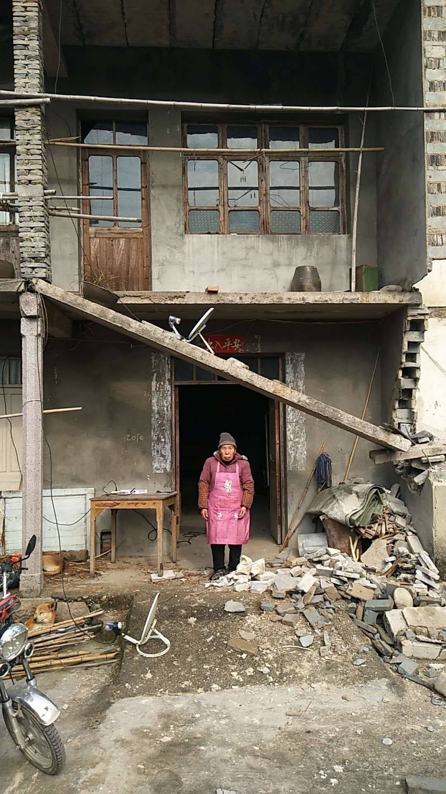

2017 年 11 月 29 日，留证网编译
【留证网】消息，近日在浙江临海方溪水库移民拆除房屋时，里程村村民 “程小美和” 的唯一住所不慎遭破坏。事后程小美和一家找拆迁现场总指挥讨要说法，总指挥陈春承认这是误拆，也承诺一周内处理此事，但谈到房子已成危房，不宜再住人时，总指挥对事主一家提出的建议是：如果担心老娘的安全，建议暂住叔伯家，如果叔伯没得住，班房给你住住也不搭界！
图：拆迁现场总指挥陈春
据拆迁指挥部官方介绍，本次房屋拆除针对己与方溪水库投资发展有限公司签订提前拆迁协议的村民，未签订此协议的不在当前拆除范围。程小美和一家未签协议，但住所不幸遭损坏，这位 79 岁的农村老太太连日来寝食难安，一方面被官方言语吓着了，另一方面担心房子随时塌陷，自己还不得不在那儿住，因为本村亲戚的房子都拆掉了。

图：程小美和在自家危房前发呆
程小美和向记者诉苦，说：“几年前二小子中风死了，儿媳妇拉走孙女要改嫁，我苦啊！这辈子命都犯在水上了，6年前老不死的（指老伴）一头倒进水渠走掉了，苦哈哈这些年都挺过来了，现在又造水库，赔给的钱刚够建房，生活没着落”。谈到老伴的死，程小美和仍一脸愤恨，就是这条没任何安全防护、没任何警示标志的引水渠，夺走了老伴的命，当时只获三千元赔偿。老太太甚至分不清方溪水厂（就是那条水渠的供水目的地）与现在到她家拆迁的方溪水库投资公司是不是同一拨人，但那种怨恨却是一贯的。
据多位知情人反映，方溪水库拆迁官方的工作存在诸多简单粗暴行为，同一件事不只现场总指挥有 “班房” 论调，另一位更高级别官员也持相同看法，在程小美和家人面前当众说过：“叔伯没地住，班房还空着”，身为共产党员，却忘了辖下之所不是法外之地的事实。
附录1：质询现场录音（简短版），时长 22 秒
附录2：质询现场录音（完整版），时长 4 分 10 秒
了解更多信息请关注：本专案首页